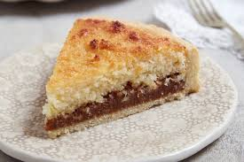

Torta de coco
Ingredientes
Abajo:
1 huevo
1 1/2 taza de harina (o maizena)
100 gr de manteca
Esencia de vainilla
Relleno :
dulce de leche (no repostero)
Arriba:
1 huevo
100 gr de coco
1 taza de azucar
Todo junto al horno hasta que se dore
Procedimientos
Abajo
Precaliente el horno a 350F
Mezclar la manteca con la harina y hacer un arenado
Añadir una chucharadita de esencia de vainilla y el huevo
Mezclar hasta que forme una masa
Poner en el molde 30 x 30 cm
Meter en el horno hasta que dore la masa
Medio
Poner el dulce de leche arriva de la masa
Arriva
Precaliente el horno a 350F
Mezclar todo junto
Poner arriva de el dulce de leche
Poner en el horno hasta que dore el coco